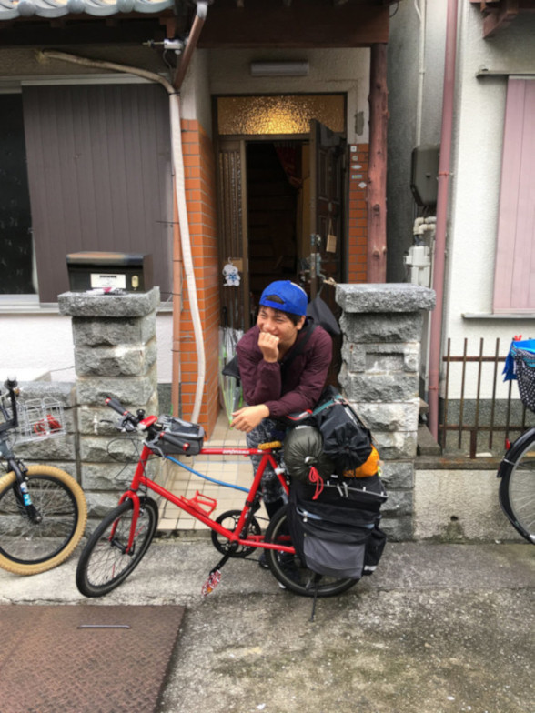
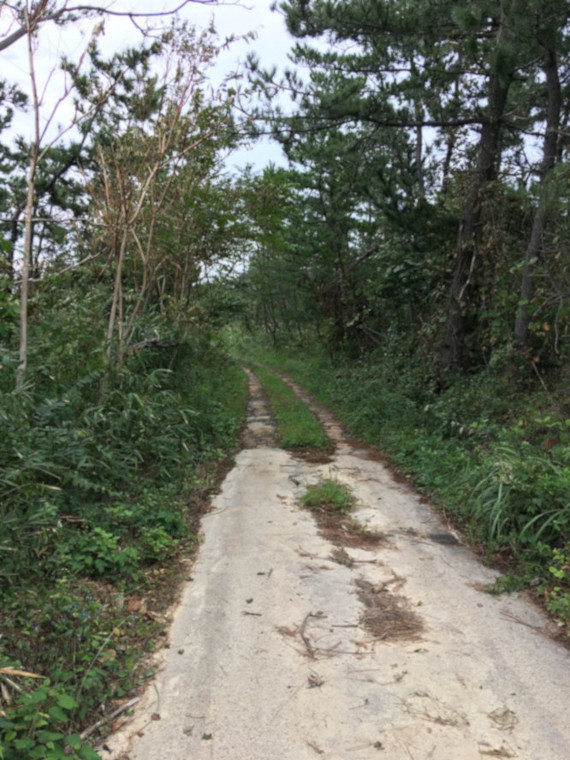
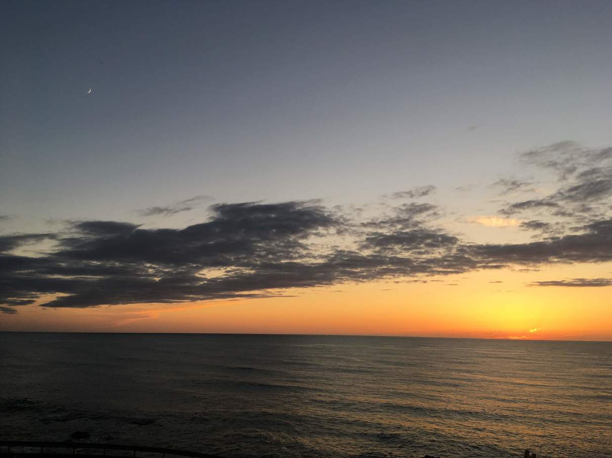
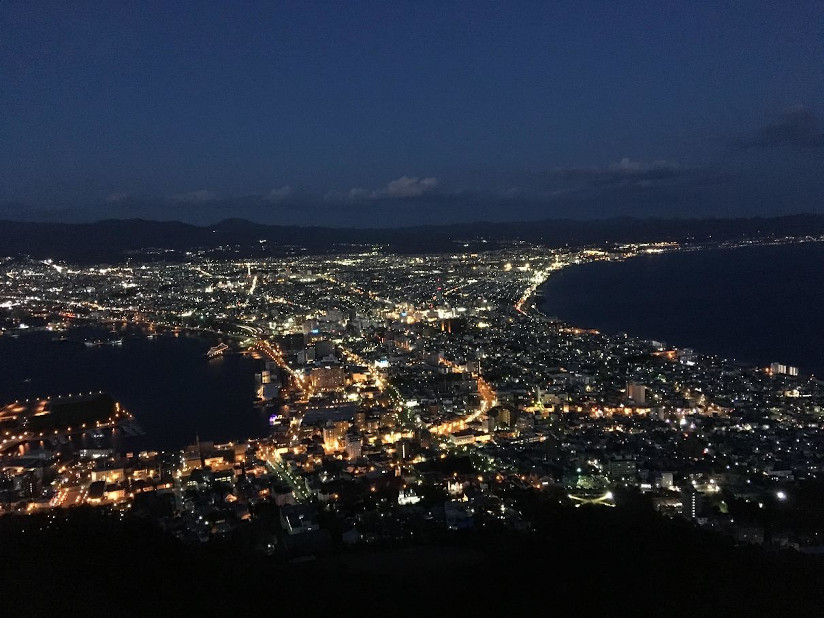
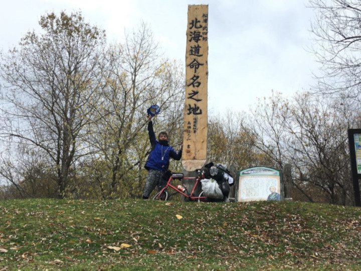
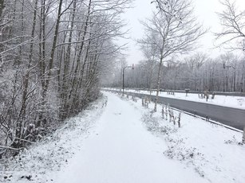
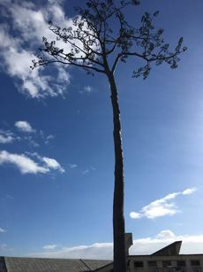
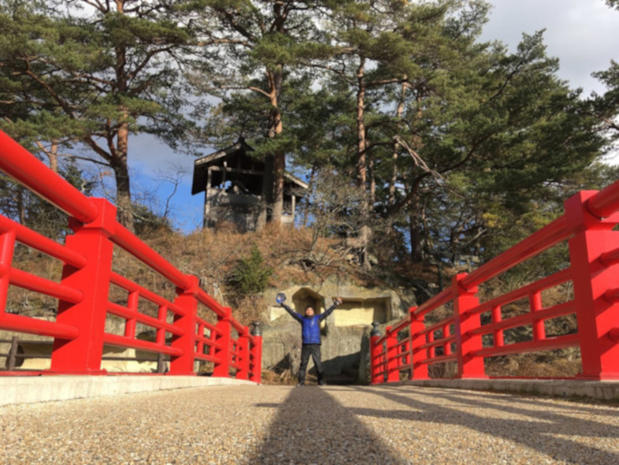
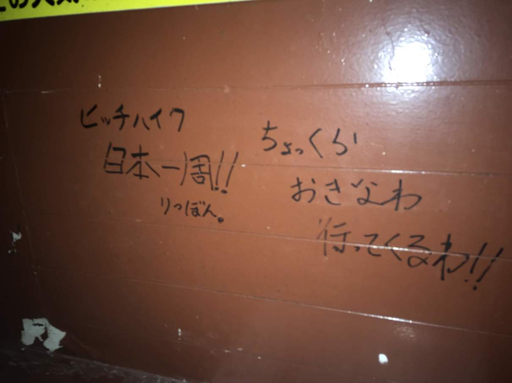

-
こんにちは。 最近は在宅ワークやYouTuberなんかも流行っており、『自由に生きる』ことが注目されるようになりました。
そこで今回は、自由の極みこと自転車で日本一周の魅力と注意点についてお話したいと思います！ -
目次
-
実体験と日本一周の魅力
-
うえーん、うえーん！
会社辞めたいよぉ！もう限界だよお！ -
そんなことやったら会社なんてやめちまって、自転車で日本一周すればええやんけ！
-
そういえば、君はついこの前日本一周したんだよね！
その時の話を聞かせてよ！ -
ええで〜！
わしが日本一周を始めたんは、2018年の10月1日からや
- 
-
これは大阪の堺市の実家だよね？
もしかして、このミニベロ(小径車)で走ったの？ -
そや！それから大体２ヶ月ちょい、いろんな所を走ったんや！
道に迷ってこんな所を走ったり
- 
-
これは福井県のあわら市だね！
凄い道！日本海側を走っていると、毎日キレイな日没が見れるんや！
朝日が登ると走り出し、日が沈むと休む、ええ生活やで！- 
北海道についたのは10月の19日やったかな？
これは『日本三大夜景』の一つ、函館山から見る函館市の景色や- 
きれいだね〜！
次は天塩川沿いにある『北海道命名の地』
北海道命名の経緯が書いてあって、知らないことだらけやった- 
へぇ！結構勉強になったりするんだね
そう！
日本一周中は、否が応でも日本史に関わるものや、見たことのないものを目の当たりにする！
知らない文化、知らない建物、知らない人たちと関わることで、 日本についての知識が深まるんやで！北海道も最後の方は12月半ばになってて、雪と寒さで死ぬかと思ったけどね！
- 
2018年の北海道は100年に一度くらい暖かかったらしいけど
他にも、岩手県や宮城県なんかでは 3.11 のときの震災以降を見たり
（下の画像は岩手県陸前高田市にある『奇跡の一本松』）- 
みんな一度は岩手に行ってほしいなぁ
岩手の陸前高田なんかは、たった今防潮堤の建設はもちろん、いろいろな建物を立てて復旧してるところよわしも衝撃を受けた
本当に、今でも街の中心は更地になっとる
なんというか 震災に対する意識が明らかに変わるいい経験になったで- 
もちろん良いことばかりではない
日本一周はもちろん楽しいのですが、少し悲しいことや辛いこともあるんです。
ねぇ！
とりあえず景色がいいとかは分かったんだけど、嫌だったこととかはあるの？うーん
言うてみれば日本一周者は アクティブな浮浪者やし、特別いい目では見られへんかぁ北海道は旅人に優しいから例外として、特に都会の方では奇異の目で見られるのは間違いないわ
うへぇ、メンタル弱い僕にはキツイっすわぁ・・・
途中で慣れるで！安心せい！
もちろん周りの目も気になる人には気になるけど、個人的には他の旅人のモラルにがっかりしたなぁ
え？どういうこと？
例えば、道の駅の水道に髪の毛が流されてたり、山奥にタバコが大量に捨てられてたりね
日本一周者のブログには、『道の駅の多目的トイレで一泊してやったぜ！』なんて最低最悪な行為が当たり前のように書いてて、ちょっと悲しくなるわなぁ
わしのブログにも『ゴミをポイ捨てしないでください！』というようなコメントが来てな
わしはそんなことしやんけど、一部の心無いアホのせいで日本一周者の評判が落ちるのは勘弁してほしいでホンマ！
僕も一度、日本最北端の『宗谷岬』にあるバス停で、日本一周者らしい人の落書きを見たよ
- 
自分の足で日本最北端まで来たらそりゃテンション上がるやろうけど、落書きはあかんわなぁ
これから日本一周をする人には法律はもちろん、ローカルルールもしっかり守ってしてほしいな！
最後に
とまぁこんな感じですわ！
確かに良いことばかりではないけど、でも君は日本一周してよかったと思ってるんだよね？
もちろんやろが！
旅の途中で出会った人々の優しさ、数々の絶景。
本当に今でも大切な思い出やあ！『自分探し』とかのモチベーションで行くのは反対やけど（自分なんか見つからんし）、間違いなくいい経験になるで！ 日本と日本人を深く知って好きになれる旅や！
少しでも行きたければ是非おすすめするで！
よし！僕もすぐに日本一周に行くぞ！！
最新記事
-
2019/10/15
日本一周の楽しさとは！？ -
2019/10/15
東京でおすすめのスポット13選！ -
2019/10/15
北海道ならココへ行け！魅惑の『函館山』 -
2019/10/15
宇都宮の餃子は美味いのか？ -
2019/10/15
最近思うこと -
2019/10/15
ネストは浅いほどに良きかな